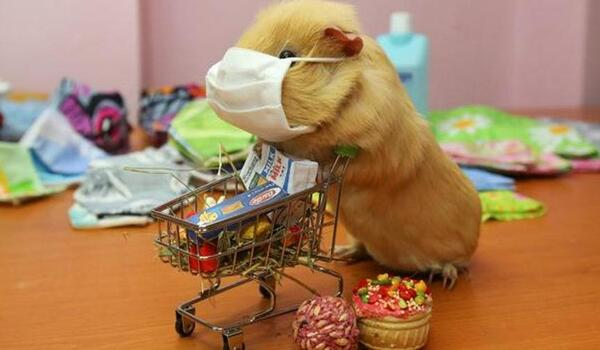
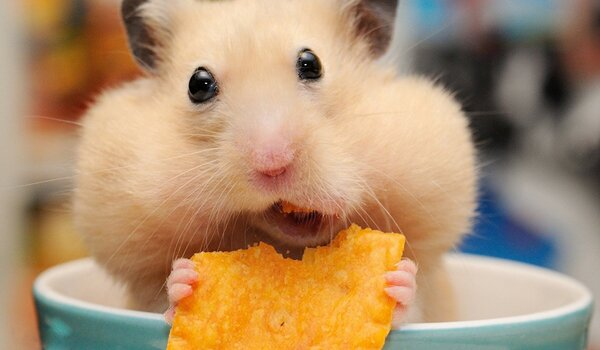

Evcil hayvan bakımı konusunda doğru bilinen yanlışlardan bahsettik, biraz da doğru bir bakımın nasıl olması gerektiğinden bahsedelim: Öncelikle evcil hayvan bakımında veteriner kontrollerinin hayati bir öneme sahip olduğunu unutmamalısınız. Evcil hayvanınızın düzenli olarak veteriner kontrollerini yaptırmalı, dostunuzun psikolojisini de gözeterek onu rahatlatmalısınız. Veteriner kontrolü için evcil hayvan kafesi içine yerleştirdiğiniz hayvanınıza sakin ve sevecen bir tavırla yaklaşmalı, sağlığı için hareket ederken onu endişelendirmemelisiniz. Bahsettiğimiz gibi en önemli olan diğer bir konu da mama meselesi… Minik dostunuzun daha sağlıklı bir yaşam sürmesi için beslenmesine dikkat etmeli, onu taze ve temiz mamalarla beslemelisiniz. Düzenli yapılacak evcil hayvan temizliği, dostunuzun sağlığını ve mutluluğunu önemli ölçüde etkiler. Fırça ile tüy bakımını yapmalı, ihtiyaç görülen durumlarda bakım ürünleri ile düzenli olarak ilgilenmelisiniz. Evcil dostlarımız sevgi ve ilgiye ihtiyaç duyar. Onlardan sevginizi ve ilginizi eksik etmemeli, olabildiğince fazla dışarı çıkarmalı, yalnız kalmalarının önüne geçmelisiniz. Kedilerin tuvaletlerini temiz tutmak hem kedinizin hem de sizin sağlığınız için oldukça önemli. Tuvaletleri pis olan kediler hastalık kapabilirler. Buna artı olarak daha temiz bir alan arayışına girip tuvaletlerini evinizin farklı bölümlerine yapabilirler. Evcil dostlar, küçük yaştan itibaren kolaylıkla eğitilebilirler. Eğitimli bir evcil hayvan, hem kendi hem de sizin için daha mutlu ve daha kolay bir hayat vadeder. Ayrıca kedi ya da köpek gibi evcil hayvanlarla büyüyen çocuklar, sorumluluk sahibi ve paylaşımcı olmalarının yanı sıra merhamet ve şefkat duyguları da gelişir. Diğer bir deyişle çocuk gelişimi için de önemli bir noktada yer alan hayvan bakımı sadece eve neşe getirmekle kalmaz, çocuğunuzun kişiliğinin oluşmasına da katkı sağlar. Unutmamalısınız ki barınaklarda sahiplenilmeyi bekleyen birçok dostumuz var. petshop’lardan alışveriş yapıp bu sektörü büyütmeyelim, barınaklardan hayvan sahiplenerek bir hayat kurtaralım. Sokaktaki dostlarımızı da es geçmeyelim, bir tas su ve bir kap mamayı hep kapılarımızın önünde bulunduralım.